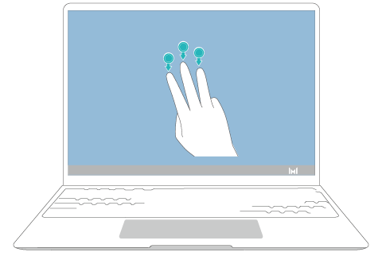
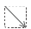
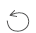

使用三指截屏功能可以进行矩形截图、窗体截图、全屏截图和自由截图。
- 部分电脑管家为 9.1 及以上版本的触摸屏计算机，支持三指截屏功能。
- 首次使用三指截屏功能，需打开电脑管家，同意用户许可协议。
- 在触摸屏上使用三个手指向下滑动，进入截图状态（屏幕整体变暗，屏幕四周有蓝色提示线）。
- 在触摸屏上使用符合截图规则的手势进行截屏操作。如截图手势不符合截图规则，则截图失败重新进入截图状态。
- 矩形截图，截取以手指在屏幕上所画直线为对角线的矩形区域。
- 窗体截图，在屏幕上画矩形窗体的对角线，即可截取窗体。
- 全屏截图，手指在屏幕上单击即可全屏截图。
- 自由截图，截取手指在屏幕上随意拖动形成的封闭形状。